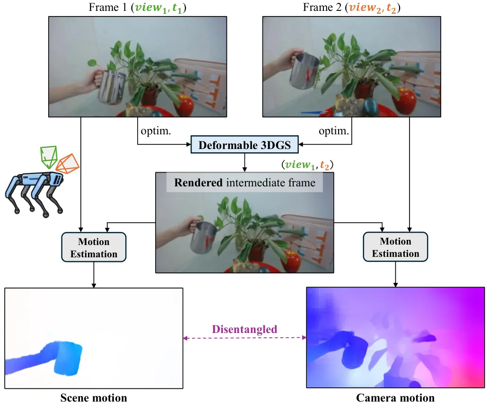
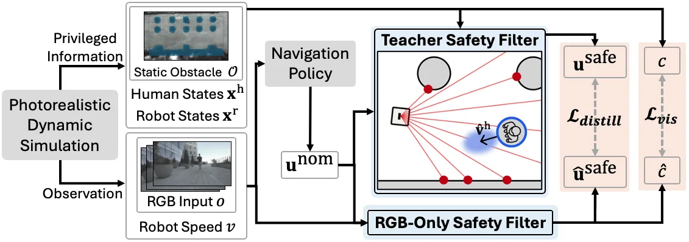
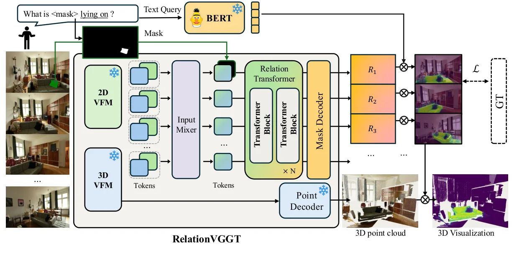
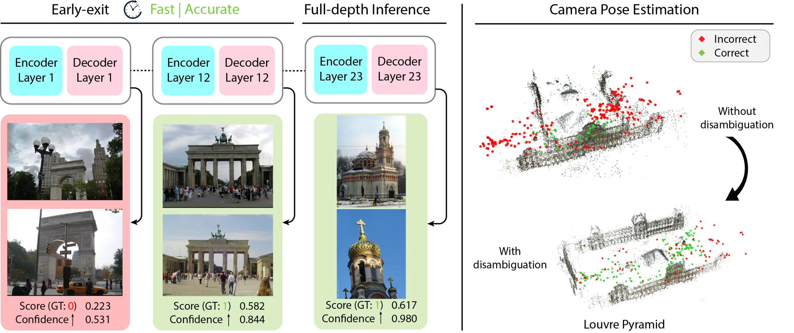
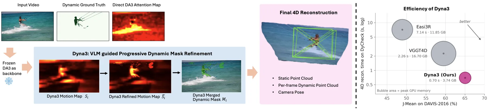
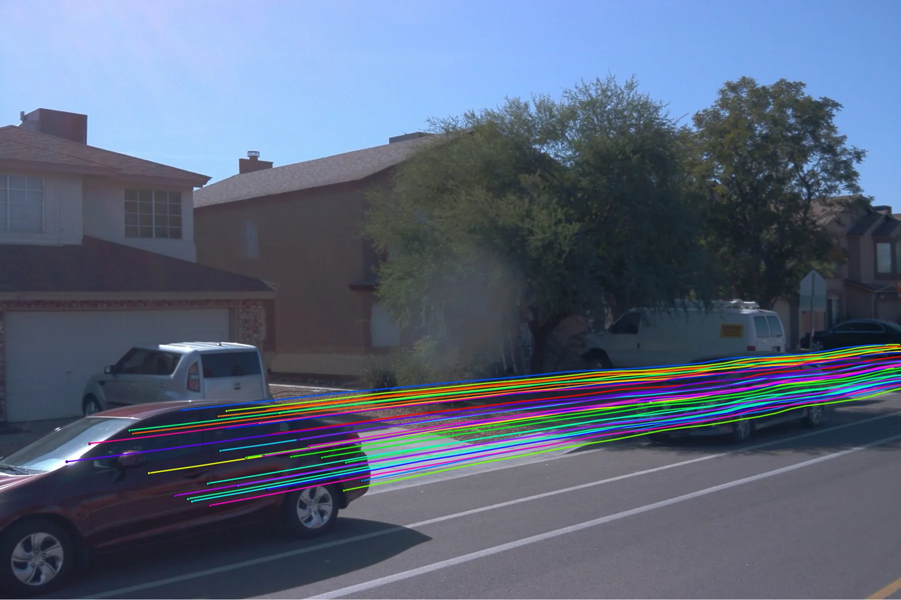
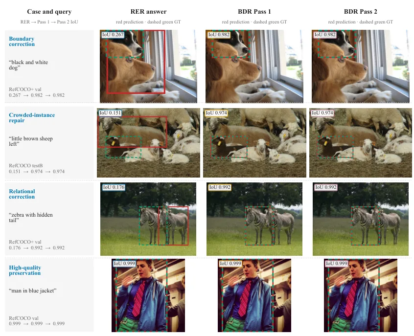
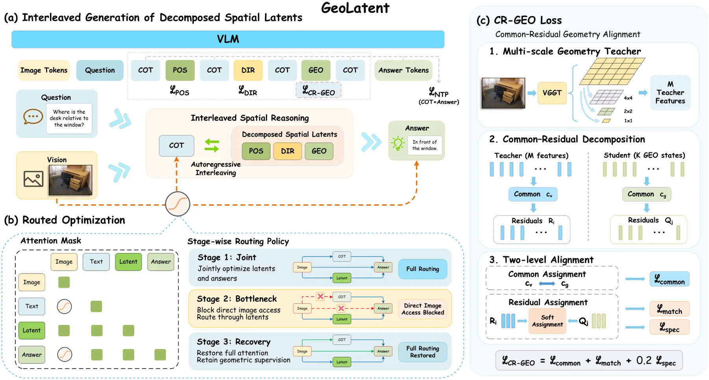

新论文 · 日期 2026-09-29 · score 20 · S层 · 3D/4D Spatial Perception · cs.CV
内容级别：完整单篇海报
作者：Thai Duy Nguyen, Haitian Zhang, Addison Lin Wang
评分 20/10
可形变 3DGS位移流监督运动-相机解耦中间视图渲染DRC 指标MMAPNeRF-DSHyperNeRF
一句话工作总结：用「位移流」替代「高斯流」做可形变 3DGS 的运动监督，并用中间视图渲染解耦场景/相机运动；NeRF-DS 上 MMAP 提升约 39%、DRC 提升约 6%，而 PSNR 仅变约 0.1%，说明图像指标掩盖了运动建模的差异。
可形变 3D 高斯泼溅（3DGS）用形变场建模动态场景，近期方法把渲染的高斯流与光流对齐来做运动监督。作者发现这类基于高斯流的监督对运动建模提升有限，根因是渲染高斯流与光流之间存在域差：高斯流只表达 t1 时刻高斯形变累积出的位移，并不建立 t1 到 t2 的像素对应。为此提出位移流（Displacement Flow）：把每个高斯的 3D 位移泼溅到图像平面，给出直接且稳定的优化信号；并用中间视图渲染把场景运动与…
Accurate dynamic scene reconstruction is important for robotic perception, where temporally consistent representations of dynamic environments are essential. Deformable 3D Gaussian Splatting (3DGS) models dyna…

新论文 · 日期 2026-09-29 · score 18 · S层 · 3D/4D Spatial Perception · cs.RO, cs.CV, eess.SY
内容级别：完整单篇海报
作者：Seungyeon Yoo, Gawon Lee, Seungwoo Jung, Inkyu Jang
评分 18/10
控制屏障函数RGB-only 安全滤波师生蒸馏特权状态动态高斯泼溅速度不确定性Jetson 部署
一句话工作总结：把在动态高斯泼溅仿真里用真值状态的特权 CBF 教师，蒸馏成只用 RGB 历史+速度+名义动作的学生安全滤波器；仿真成功率 74.0%/无碰撞率 86.1%（教师 76.8%/91.5%，未加滤波 48.9%/53.0%），真机 180 回合验证，机载 9.2 ms/次。
RGB-only 端到端视觉导航策略在真实动态环境里仍易碰撞，需要专门的安全层。已有视觉控制屏障函数（CBF）方法试图从 RGB 观测提供安全，但常依赖实时渲染或显式场景重建，且主要面向静态场景，难以机载部署。论文提出师生式视觉蒸馏：把特权 CBF 教师的安全行为迁移到 RGB-only 学生滤波器。学生把短 RGB 历史、机器人速度与名义控制直接映射为安全动作，教师则在真实的动态高斯泼溅仿真里使用机器人/障碍物真…
RGB-only end-to-end visual navigation policies remain vulnerable to collisions in real-world dynamic environments, motivating a dedicated safety layer. Existing visual Control Barrier Function (CBF) approaches…

新论文 · 日期 2026-10-01 · score 15 · S层 · Geometry Foundation Models / 3D Foundation Models · cs.CV, cs.AI
内容级别：完整单篇海报
作者：Minsu Kim, Jaesung Choe, Jiwoo Lee, Yu-Chiang Frank Wang
评分 15/10
3D 基础模型VGGT空间关系分割无位姿多视图关系 Transformer自动化标注DINOv2Pi3
一句话工作总结：前馈、无位姿的多视图 3D 关系分割：融合 DINOv2 语义与 Pi3 几何特征、用关系 Transformer 做主体条件化跨视图预测；三个基准平均 mIoU 0.382、mAcc 0.549（RelationField 0.303/0.480），推理 26 ms 对逐场景优化方法 288 s/查询。
3D 重建已从逐场景优化走向前馈推理，语义理解也随之跟进，但现有方法局限于物体级感知、忽略物体间空间关系。论文在「前馈、无位姿、多视图」设定下定义 3D 空间关系分割：给定视觉指定的主体与一段关系文本查询，模型跨视图分割出目标，且不给目标类别名。为此提出 RelationVGGT，把视觉基础模型的语义特征与 3D 几何基础模型的几何感知表示融合，并用关系 Transformer 做主体条件化的跨视图关系预测，既不需…
Recent advances in 3D reconstruction have progressed from per-scene optimization to feed-forward inference, and semantic scene understanding has followed suit -- yet existing methods remain confined to object-…

新论文 · 日期 2026-09-28 · score 15 · S层 · 3D/4D Spatial Perception · cs.CV, cs.RO
内容级别：完整单篇海报
作者：Jin Hyun Kim, Min Young Kim, Soohwan Song, Daekyum Kim
评分 15/10
4D 高斯前馈重建机器人世界模型多相机融合关节几何/FK度量 4DDROIDCosmos 3
一句话工作总结：两阶段前馈把多相机（含机器人腕部相机）rollout 提升为统一度量 4D 高斯场：Stage 1 用关节网格锚定 + FK 条件化形变做联合提升，Stage 2 做保持位移的渲染反馈细化；256 留出 DROID 情节上新视角 PSNR +2.15 dB、AbsRel 0.373→0.197、机器人 EPE 22.2→8.6 mm。
动作条件视频世界模型能从多相机预测未来机器人交互，但输出仍是互不相干的视频集合，而非跨视角、跨时刻可查询的共享度量场景。已有 4D 重建可把这些预测空间化，但独立重建每条相机流再合并无法保证跨视角一致，尤其在「机器人自带运动相机 + 固定外部相机」时更糟。论文提出 RoGSW4RLD：一个前馈框架，把同步多相机 rollout 提升为统一、可按时查询的度量 4D 高斯场。它不另学几何转换模型，而是直接重建既有世界模…
Action-conditioned video world models predict future robot interactions from multiple cameras, yet their outputs remain disparate video collections rather than a shared metric scene queryable across viewpoints…

新论文 · 日期 2026-10-01 · score 14 · S层 · Geometry Foundation Models / 3D Foundation Models · cs.CV
内容级别：完整单篇海报
作者：Hanyuan Xiao, Gonglin Chen, Haolin Xiong, Wenbin Teng
评分 14/10
3D 基础模型VGGT多视图消歧DoppelgangersSfM 视图图剪枝置信度早退AerialMegaDepth
一句话工作总结：在冻结 VGGT 上做置信度驱动的早退多视图消歧：单次编解码替代 O(n²) 成对比较，VisymScenes Acc 0.9441/F1 0.9457，推理 103.9 ms（Doppelgangers++ 165 ms），早退阈值 0.8 时 0.9503；SfM 大幅提升（Big Ben AUC@10 0.511→0.747）。
不同但外观相似的 3D 表面之间的「幻影匹配」（doppelgangers）是大规模在野 3D 重建与视觉定位的根本障碍。已有工作用成对分类器缓解，但这限制了多视图上下文推理，并给下游 SfM 带来 O(n²) 推理复杂度。论文提出 MVDG：一个建立在 3D 基础模型 VGGT 上的可扩展多视图消歧框架，可对任意数量的多视图图像联合推理。通过引入 3D 感知的多视图特征，它用单次编解码减少对成对比较的依赖。论文还…
Illusory matches between distinct yet visually similar 3D surfaces--doppelgangers--remain a fundamental obstacle for large-scale, in-the-wild 3D reconstruction and visual localization. Prior work mitigates thi…

新论文 · 日期 2026-10-01 · score 14 · S层 · Geometry Foundation Models / 3D Foundation Models · cs.CV
内容级别：完整单篇海报
作者：Xinhao Xiang, Weiyang Li, Zhijie Zheng, Abhijeet Rastogi
评分 14/10
深度基础模型Depth Anything 3免训练 4DVLM 引导SAM 3动态物体分割相机位姿内存效率
一句话工作总结：免训练地把深度基础模型 DA3 扩展到 4D：用最佳匹配特征搜索做运动判别 + VLM 生成提示给 SAM3 做实例分割；DAVIS-2016 J-Mean 65.04（VGGT4D 59.50），TUM-dynamics 位姿 2.9× 快/5.3× 省内存，4D 重建 0.70 s/3.74 GB。
近期深度基础模型（如 Depth Anything 3, DA3）能取得出色的多视图深度估计，但假设静态 3D 场景，限制了在真实动态环境的使用。已有免训练 4D 方法（Easi3R、VGGT4D）依赖「对应关系训练」的骨干，其注意力编码了跨帧匹配，而纯深度模型 DA3 没有这一性质。论文提出 Dyna3：一个免训练框架，无需微调即可把 DA3 扩展到 4D 动态场景重建。关键洞察是 DA3 的跨视图特征虽只为深度…
Recent depth foundation models like Depth Anything 3 (DA3) achieve remarkable multi-view depth estimation but assume static 3D scenes, limiting their applicability to real-world dynamic environments. Existing…

新论文 · 日期 2026-09-28 · score 14 · S层 · 3D/4D Spatial Perception · cs.CV, cs.LG, cs.RO
内容级别：完整单篇海报
作者：Masahiro Ogawa, Qi An, Atsushi Yamashita
评分 14/10
3D 点跟踪状态空间模型Mamba-3度量深度Depth Anything 3单卡预算绝对度量指标TAPVid-3D
一句话工作总结：组合两个冻结前端（稠密光流 + DA3 单目度量深度），只用一个 Mamba-3 状态空间模型学沿射线深度的残差；TAPVid-3D minival 绝对度量 mean metric-AJ 0.256（基线 0.147、DELTA 0.183），refiner 仅加约 11M 参数、6–12 fps。
在绝对米制（而非未知尺度）下跟踪动态场景的任意点，支撑着 3D/4D 重建、机器人导航与自动驾驶——这些决策以米而非像素为单位。论文目标是：在单张消费级 GPU、无位姿、单目预算下，做到绝对度量准确的 3D 点跟踪器。方法基于一个观察：一旦某点的 2D 图像轨迹固定，决定其度量精度的量就是沿像素射线的深度。于是它不端到端学跟踪，而是组合两个冻结前端——稠密光流做 2D 对应、单目度量深度网络给第三维——只学它们无法…
Tracking any point of a dynamic scene in metric 3D - in absolute meters, not up to an unknown scale - underpins 3D and 4D reconstruction, robot navigation, and autonomous driving, where decisions are made in m…

新论文 · 日期 2026-10-01 · score 11 · A层 · Embodied Navigation / VLN / Spatial Reasoning · cs.AI, cs.CV
内容级别：半海报
作者：Dongwei Sun, Yujie Zhang, Bowen Yao, Pei Liu
评分 11/10
视觉定位空间推理构造-编辑RERBDR双向重建受控纠正遥感定位
一句话工作总结：把视觉定位拆成「显式候选区域构造（RER）+ 坐标字段双向编辑（BDR）」；八 split Overall Acc@0.5 92.41，受控破坏下单次 BDR 把 mIoU 从 58.80% 提到 86.19%、Repair@0.7 87.99%。
视觉定位用边界框定位语言描述的物体。多数多模态定位模型把目标识别、空间推理与边界估计压缩成一次终端预测；自由形式的推理链虽让推理语言化，却不必然暴露可测量、可编辑的空间状态，于是中间定位误差难以诊断与纠正，错误区域与不准边界会留到最终框。论文提出 CoEvolve，把定位拆成显式的「状态构造」与「状态编辑」：Region-Evolution Reinforcement（RER）把定位分析组织成渐进式语义-空间轨迹，…
Visual grounding localizes an object described by language with a bounding box. Most multimodal grounding models compress target identification, spatial reasoning, and boundary estimation into one terminal pre…

新论文 · 日期 2026-10-02 · score 10 · A层 · Embodied Navigation / VLN / Spatial Reasoning · cs.CV, cs.AI
内容级别：半海报
作者：Yakun Zhu, Yi Bin, Yujuan Ding, Zheng Wang
评分 10/10
3D 空间推理空间潜在CR-GEO路由优化有效秩潜在读出干预SPAR-BenchQwen3-VL
一句话工作总结：用 CR-GEO 分离共享/残差教师几何 + 路由优化让答案学习经潜在中介：几何有效秩 1.00→3.87，屏蔽潜在读出方向准确率 89.1%→25.8%，SPAR-Bench 73.0%、SPBench 72.1%、三基准均值 62.8%。
尽管视觉语言模型进展迅速，从 2D 图像做 3D 空间推理仍困难。文本方法用离散 token 描述中间几何，限制了连续空间关系的保真度；连续潜在表示更丰富，但单一潜在类型不能显式分离不同空间任务所需的线索。分解式空间潜在分别表示位置、方向与全局几何并在几何监督下学习，但几何表示仍会塌缩到某个主导方向，且不受限的注意力会让潜在在答案学习中未被充分利用。论文提出 GeoLatent，结合 Common–Residual…
Despite progress in vision-language models, 3D spatial reasoning from 2D images remains challenging. Text-based methods describe intermediate geometry with discrete tokens, limiting fidelity for continuous spa…